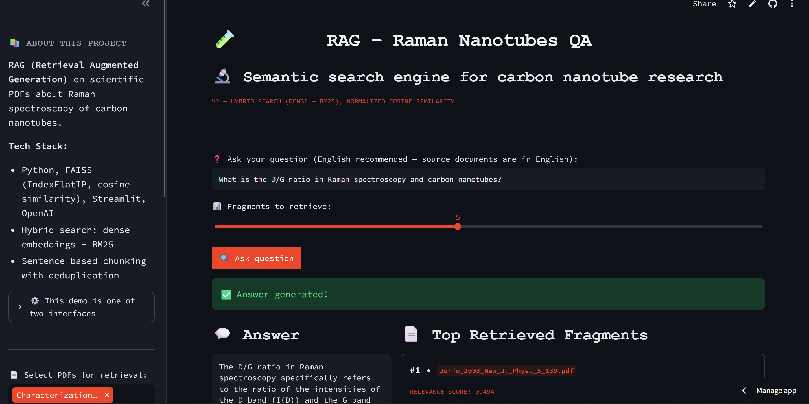

💡 Carbon Nanotubes RAG System
A retrieval-augmented question-answering system over 24 scientific papers on Raman spectroscopy of carbon nanotubes, with hybrid search, a FastAPI service, Docker, CI and a measured answer-quality score.
GitHub Repository · Live Streamlit demo · Live REST API (Swagger docs)

Why this project
A language model asked about a narrow technical field answers fluently and sometimes wrongly. For a domain question such as "what does the D/G ratio tell about defects?" the useful answer comes from the papers, with the source named. This project builds that path: the papers are indexed, the question is matched to the relevant passages, and the model answers only from them. It started as a Streamlit prototype that used Euclidean distance on unnormalised vectors and cut text at 500 characters, and was rebuilt in six documented phases into a tested, deployed service.
Results at a glance
| Measure | Result |
|---|---|
| Answer faithfulness (RAGAs, LLM judge) | about 0.80–0.82 over 14 domain questions |
| Out-of-scope question ("melting point of carbon nanotubes") | 1.0: the system said the context did not contain the answer |
| Automated tests | 31, on every push |
| Public API | /query, /documents, /health; request validation, readable errors, Swagger docs |
Faithfulness asks whether the answer stays within the retrieved context. In most of the lower-scoring answers retrieval was correct, but the model added accurate textbook facts that the retrieved passages did not contain; that is a property of the current prompt, not hallucination, and it is recorded rather than hidden.
What the evaluation showed
- The duplicate check found a real data problem. The same paper was saved under two filenames and filled the top of every search with identical results. Content hashing removed it.
- Hybrid search covers what embeddings miss. Exact terms and abbreviations such as RBM or SWNT are matched by BM25 next to the dense retrieval.
- A 512 MB free-tier container only fits with CPU-only PyTorch. The default build pulls a CUDA version of 800 MB to 2 GB.
Methodology
PDF corpus
↓
Deduplication + sentence-based chunking (about 120 words, with overlap)
↓
Embeddings (all-MiniLM-L6-v2, L2-normalised) → FAISS IndexFlatIP
↓
Question → hybrid retrieval (dense + BM25)
↓
Generation from the retrieved context only (gpt-4o-mini)
↓
Answer + cited sources
- Cosine similarity done correctly:
IndexFlatIPover normalised vectors instead of Euclidean distance on raw ones. - One implementation, two interfaces: the Streamlit UI and the FastAPI service are thin layers over the same modules for ingestion, retrieval and generation.
- Operations: structured JSON logs (method, path, status, duration, and for queries the number of sources and generation time), separate Docker images for API and UI with docker-compose, CI on every push, deployment on Render from the same Dockerfile.
- Cost protection for the public demo: questions are limited to 500 characters; the API allows 10 requests per minute per client and 500 queries per day in total; the UI has daily and per-session caps; the default example answer is cached.
Testing
31 automated tests run on every push and pull request (pytest in GitHub Actions). They need no OpenAI key and no built index.
What is verified
- Ingestion: chunking and content-hash deduplication.
- API: all three endpoints, request validation (empty or whitespace questions,
top_kout of range, missing fields) and the 502 response when the pipeline fails. - Logging middleware: request details are captured for successful and for rejected requests.
Not covered
- Answer quality in CI. The OpenAI calls are mocked in the tests. Quality is measured separately with RAGAs, which makes real API calls and is not part of the suite.
- Retrieval quality.
context_precisionwas not measured because it needs reference answers. - The deployed service under load, and the rate limiter across restarts or several instances.
Limitations
- The evaluation uses 14 hand-written questions and one metric scored by an LLM judge, so 0.80–0.82 is an indication, not a precise measurement.
- The corpus is 24 papers. A question outside it gets a refusal or a general-knowledge answer, not a literature search.
- The embedding model is small and general-purpose, not tuned for spectroscopy terms.
- The rate limits live in process memory: they reset on restart and are not shared between instances. The per-client key comes from
X-Forwarded-Forand can be spoofed, so the daily cap is the real cost ceiling. - The live API runs on a free tier and sleeps after 15 minutes without requests; the first request can take 30–60 seconds.
Tech stack: Python, FAISS, sentence-transformers, BM25, OpenAI API, FastAPI, Pydantic, Streamlit, Docker, docker-compose, RAGAs, pytest, GitHub Actions, Render.
Related: the same carbon-nanotube topic is covered by the Raman Spectroscopy Analyzer (experimental spectra) and the Carbon Nanotube Visualizer (structure and electronic properties).